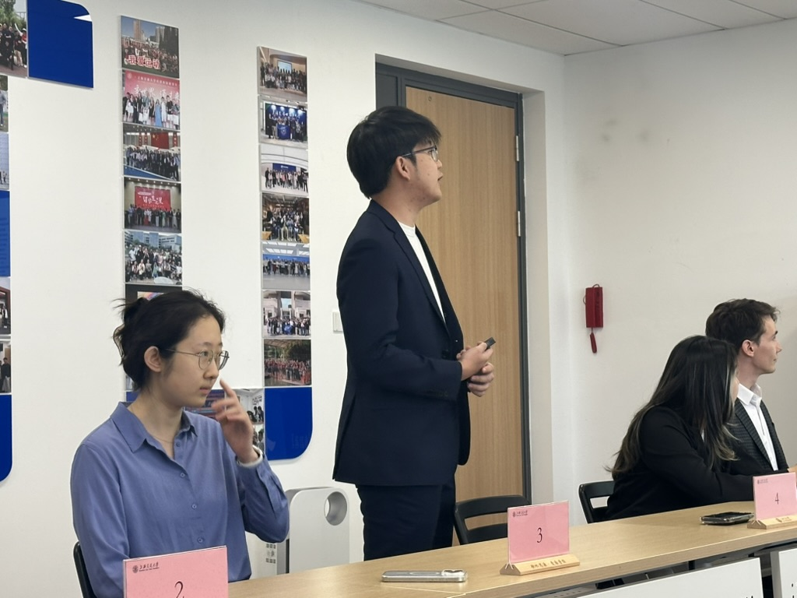

A Semester of Closure, Not Conclusion
As I approach the end of my final semester as an undergraduate student in China, I find myself reflecting deeply upon this meaningful and formative chapter of my life. Studying abroad has been an enriching and profoundly interesting experience, shaping my perspective and continuously motivating me to seize every opportunity to broaden my horizons and engage with diverse ideas and inspiring people.
Throughout my undergraduate journey, I have engaged in a multitude of experiences—internships, research projects, extracurricular activities, competitions, and leadership roles within various student organizations. On the surface, these achievements represent substantial personal growth and significant milestones. Recently, however, I encountered a setback during the selection process for the Outstanding International Undergraduate Student Award. Initially nominated by my department as the top candidate, I advanced to compete at the university level, where only 17 out of 20 exceptional students were ultimately selected. Unfortunately, I was one of the three students eliminated, simply due to a record of academic shortcomings—specifically, failing few courses earlier in my undergraduate years.
This incident led me to contemplate deeply about how success is perceived within the educational systems of China, and more broadly, across East Asia. Here, academic excellence, often represented narrowly by grades, dominates as the singular standard by which students are judged. It feels as though anything less than perfection, a straight "A" record, relegates one immediately into a category of inadequacy or perceived failure. Even if one excels in multiple dimensions—internships, leadership, extracurricular pursuits—these factors frequently hold less weight compared to traditional academic performance.
Despite receiving multiple graduate school offers from prestigious universities worldwide and gaining recognition from various mentors and peers, the lack of a perfect academic transcript was enough to overshadow my diverse accomplishments. Initially, this deeply frustrated and perplexed me. I questioned the fairness and comprehensiveness of such evaluation criteria. How could it be that excelling broadly yet faltering slightly in one domain diminishes an individual's entire academic journey?
However, after experiencing disappointment, I woke up the next morning with a clearer mind. The award, while symbolically meaningful, would not fundamentally alter my future trajectory or the essence of what I have accomplished. Ultimately, it was intended as a personal milestone, a symbolic capstone to summarize and acknowledge my undergraduate journey. But the absence of this acknowledgment does not negate the reality of my efforts and achievements. I know how much effort and passion I have poured into my undergraduate life, and when I reflect upon it earnestly, I can confidently say I have given it my all. I have worked diligently and fought passionately.
Adjusting one's mindset following setbacks is crucial. As Viktor Frankl wisely observed,
"When we are no longer able to change a situation, we are challenged to change ourselves."Therefore, moving forward, I choose to step beyond the restrictive confines of a student's mindset, redirecting my attention toward aspects genuinely deserving my energy and focus—completing my graduation thesis with excellence, maximizing the value of my current internship, and thoughtfully preparing for my upcoming journey into graduate studies and beyond.
In the end, awards and external validations are ephemeral. True significance lies in our continuous pursuit of growth, resilience, and unwavering commitment to our passions and principles. This, perhaps, is the most profound lesson I've learned from this experience.